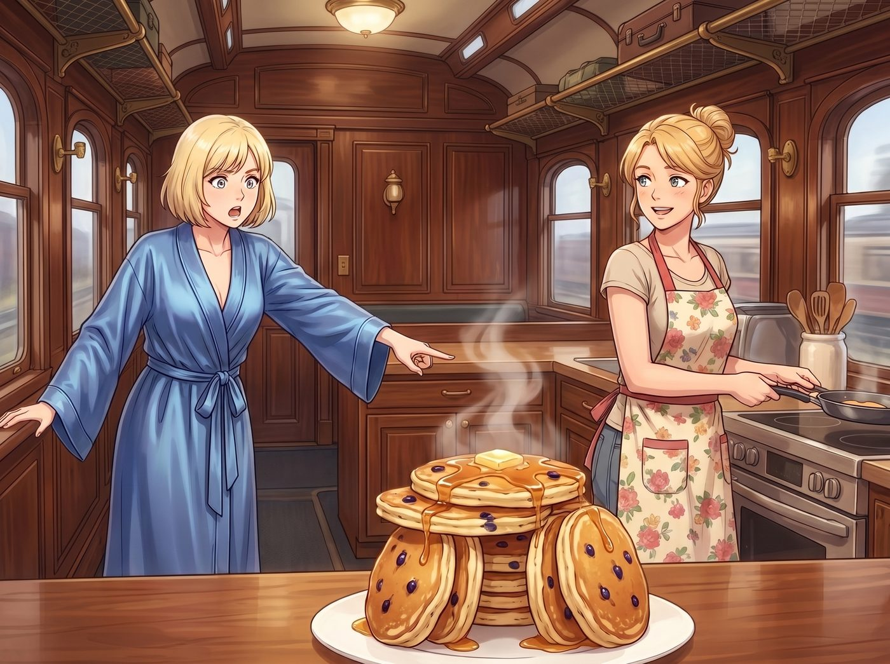

多出來的鬆餅

猛禽皮卡的引擎轟鳴聲消失後，二號車廂陷入了一種令人窒息的安靜。
沒有了 Chloe 砸扳手的鏗鏘聲，沒有了 Max 寶麗來相機的快門聲，這座鋼鐵堡壘突然變得空蕩蕩的。
Victoria 穿著真絲睡袍，做完了一整套 La Mer 晨間保養，又回覆了幾封畫廊的郵件。她走到會客區，百無聊賴地癱在沙發上。太安靜了。安靜到她能聽見中央空調出風口的微弱白噪音。
她試圖找點樂子，於是對著工作站後的 Lily 挑釁：「Lily，空調溫度調高 0.5 度。我覺得冷了。還有，妳敲鍵盤的聲音能不能小一點？影響到我思考藝術了。」
如果是 Chloe，這時候一定會跳起來罵她「嬌生慣養的大小姐」。
但 Lily 只是推了推圓框眼鏡，毫無波瀾地回答：「已將溫度上調 0.5 度，Victoria 學姐。並已為我的鍵盤啟動靜音模式。請問還有其他需要合規處理的生理訴求嗎？」
Victoria 翻了個白眼，像個洩了氣的皮球一樣陷進沙發裡。
欺負一個沒有情緒的行政 AI 簡直毫無成就感。她雖然死都不會承認，但她真的有點想念那兩隻吵吵鬧鬧的「垃圾熊（Trash Pandas）」了。
為了尋找一點煙火氣，Victoria 穿過走廊，來到了廚房區。
Kate 繫著碎花圍裙，正哼著讚美詩，將最後一杓麵糊倒進平底鍋裡。
「Kate，拜託告訴我妳做了什麼好吃的，我需要一點碳水來拯救我枯燥的早晨——」
Victoria 的聲音在看到流理台上的東西時，戛然而止。
在那裡，矗立著一座搖搖欲墜的、由藍莓鬆餅堆砌而成的「巨石陣」。目測至少有二十幾片，每一片都厚實飽滿，頂端還放著一塊正在融化的巨大奶油。
「Kate……」Victoria 震驚地指著那座鬆餅山，「我們是要在車廂裡舉辦伐木工人吃漢大賽嗎？」
Kate 轉過身，看到流理台上的「傑作」後，自己也愣住了。
她眨了眨眼睛，臉頰瞬間漲得通紅，雙手不知所措地絞著圍裙：「主啊……我……我完全沒意識到。我只是下意識地打了十幾顆雞蛋……因為平時 Chloe 一個人就能吃掉八片，而且 Max 總是在我還沒裝盤的時候就偷吃掉兩片……」
Kate 的聲音越來越小，眼神裡閃過一絲落寞。她的肌肉記憶，還停留在那個五個人擠在餐桌前搶食物的喧鬧早晨。
就在這時，Lily 端著她的馬克杯，像幽靈一樣出現在廚房門口。
她的目光像掃描器一樣掃過那座鬆餅山，大腦迅速進行了熱量核算。
「根據現有的人口密度和基礎代謝率，」Lily 平靜地宣佈，「這份碳水化合物的產量，超出了我們三人單次進食閾值的 160%。」
「所以呢？倒掉嗎？」Victoria 皺起眉頭。
「絕對不行。」Lily 嚴厲地否定了這個提議，「在營地的資產負債表上，這屬於『已轉化為成品的不可回收資產』。如果將其作為廚餘垃圾處理，不僅會造成嚴重的資產折舊，還會觸發環境保護局（EPA）關於『有機廢棄物超標』的潛在罰款風險。」
Lily 推了推眼鏡，給出了一個極度殘忍的行政指令：
「為了解決這個合規漏洞，我們必須在它變質前，進行『內部消化重組』。也就是說，這將是我們今天的早餐、午餐，以及……晚餐。」
Victoria 瞪大了眼睛：「妳要我一天三頓都吃藍莓鬆餅？！我的體脂率會爆炸的！」
「這叫『資產負債的平滑過渡』，學姐。」Lily 遞給她一個盤子和一副刀叉。
於是，在接下來的一整天裡，二號車廂出現了極度詭異的一幕。
早上八點，她們坐在餐桌前，切鬆餅。
中午一點，她們依然坐在餐桌前，用微波爐加熱鬆餅。
到了晚上七點，Victoria 已經吃得兩眼發直，但 Kate 依然溫柔地往她的盤子里塞進最後半塊鬆餅。
沒有人說話，只有刀叉碰撞瓷盤的聲音。
雖然一天三頓鬆餅吃到讓人懷疑人生，但奇怪的是，沒有人抱怨，也沒有人真的把食物倒掉。
她們坐在異常安靜的車廂裡，嚼著帶著藍莓香氣的碳水，心裡想的卻是同一件事： 那兩個傢伙，現在是不是正在加州的某個沙灘上吃著垃圾食物？她們什麼時候才回來把車廂重新弄得吵吵鬧鬧的？